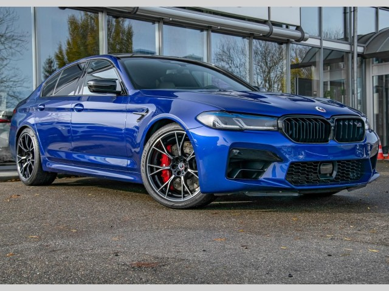

BMW M5 Competition
Technické specifikace:
- Motor: 4.4 V8, Twin-Turbo
- Výkon: 625 koní (460 kW)
- Zrychlení 0-100 km/h: 3.1 sekundy
- Maximální rychlost: 305 km/h
- Spotřeba: 12.8 l/100 km
- Cena: 2 300 000 CZK
Vybavení:
- Adaptivní M podvozek
- Sportovní sedadla z kůže Merino
- BMW iDrive s 12.3" displejem
- Ovládání hlasem
- Asistenční systémy pro řízení
BMW M5 Competition je vrchol sportovních sedanů s extrémním výkonem a luxusním vybavením, které uspokojí i ty nejnáročnější řidiče.